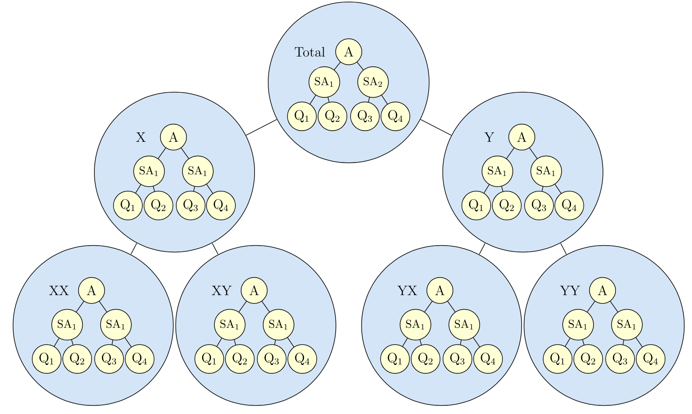
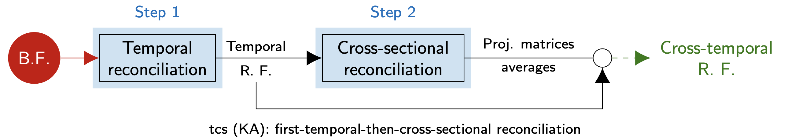

Reconciliation Forecasting
Land Transfer Duty
Author: Hoang Do
Land Transfer Duty
What is Land Transfer Duty? (or Stamp Duty)
Paid when a property is bought or acquired
Varies by property value, usage, buyer nationality, and eligibility for exemptions.
Impact of LTD
On property market
A 100 basis point cut in transfer duty could boost property transactions by 10%. (Source: NSW Treasury)
Victoria’s tax revenue is heavily dependent on land transfer duty
Current forecasting approach
Model used by DTF
Cointegration pattern between LTD, Sales, and Home Value Index (HVI)
Vector Error Correction Model (VECM) with 3 lags
RMSE: Constantly drops until 7-step-ahead forecasts then increases
Applying Forecast Reconciliation
Hierarchical Time Series
Limitations
Characteristics of different levels may differ
Include these features can improve forecast accuracy
Notation
Hierarchy structure for LTD
Can be written in matrix form:
\[ \begin{bmatrix} \text{Total}_{t} \\ \text{Non-residential}_{t} \\ \text{Residential}_{t} \\ \text{Commercial}_{t} \\ \text{Industrial}_{t} \\ \text{Other}_{t} \\ \end{bmatrix} = \begin{bmatrix} 1 & 1 & 1 & 1 \\ 0 & 1 & 1 & 1 \\ 1 & 0 & 0 & 0 \\ 0 & 1 & 0 & 0 \\ 0 & 0 & 1 & 0 \\ 0 & 0 & 0 & 1 \\ \end{bmatrix} \begin{bmatrix} \text{Residential}_{t} \\ \text{Commercial}_{t} \\ \text{Industrial}_{t} \\ \text{Other}_{t} \\ \end{bmatrix} \] or in a more compact notation:
\[ \text{LTD}_{t} = \text{S}\text{b}_{t}, \]
Temporal hierarchy
Note
A time series can be disaggregated by non-overlapping temporal frequencies
Temporal reconciliation is described in Athanasopoulos et al. (2017).
Cross-sectional + Temporal = Cross-Temporal

Forecast ALL series
Forecast at different levels don’t add up!
Forecast at different levels don’t add up!
Important
Independently produced forecasts are incoherent,
\(\text{LTD}_{T+h|T} \neq \text{Comm}_{T+h|T} + \text{Ind}_{T+h|T} + \text{Other}_{T+h|T} + \text{Residential}_{T+h|T}\).
Or for temporal hierarchy
\(\text{Year}_{T+h|T} \neq \text{Jan}_{T+h|T} + \text{Feb}_{T+h|T} + \text{Mar}_{T+h|T} + ... + \text{Dec}_{T+h|T}\).
Reconciliation
2-step reconciliation process
Important
Forecast reconciliation is a post-forecasting process that involves transforming a set of incoherent forecasts into coherent forecasts which satisfy a given set of linear constraints for a multivariate time series.
Hyndman et al. (2011)
First obtain a set of base forecast \(\hat{\text{y}}_{h}\),
Then all coherent forecast can be represented as:
\(\tilde{\text{y}}_{h} = \text{SG}\hat{\text{y}}_{h}\),
where G is a matrix that maps the base forecasts into the bottom level, and the summing matrix S sums these up using the aggregation structure to produce a set of coherent forecasts \(\tilde{\text{y}}_\text{h}\)
Minimize variance
MinTrace
Note
Wickramasuriya et al. (2019) show that the variance-covariance of the h-step-ahead coherent forecast errors is given by:
where \(\text{W}_{h} = Var[\text{y}_{T+h} - \hat{\text{y}}_{h}]\) is the variance-covariance matrix of the corresponding base forecast errors.
The objective is to find a matrix G that minimises the error variances of the coherent forecasts.
MinTrace
Note
Wickramasuriya et al. (2019) show that:
minimises the trace of \(\text{V}_{h}\) subject to S G S = S
Therefore, the optimally reconciled forecasts are given by:
which refers as the MinT
Now we need to estimate \(\text{W}_{h}\), which is challenging.
Assumption made to set \(\text{W}_{h} = \text{k}_{h}\text{I}_{n}\) to simplify the estimation (Hyndman et al. (2011), Athanasopoulos et al. (2009)).
Cross-temporal reconciliation
Heuristic first-temporal-then-cross-sectional reconciliation
2-step approach

Kourentzes and Athanasopoulos (2019)
Step 1: reconciliation through temporal hierarchies for each single variable –> temporally coherence forecast
Step 2: time-by-time cross-sectional reconciliation of the previously computed forecast –> cross-sectionally coherence forecast
The final reconciled forecast are calculated starting from the step 1 forecasts through the average of the step 2 projection matrices –> cross-temporally coherence forecast
FoReco package

R package, Di Fonzo and Girolimetto (2022)
Offers classical (bottom-up and top-down) and modern (optimal and heuristic combination) forecast reconciliation procedures
Allows for cross-sectional, temporal and cross-temporal linearly constrained multiple time series
Results
Comparing base forecasts
- Cross-temporal VECM forecast performs much better
Reconciliation forecast efficiency
Not efficient enough from 1 to 3-step-ahead forecasts
Performs much better for long-term forecast
Comparing against base forecasts
Cross-temporal forecasts do better from 1 to 4-step-ahead forecast
From 5-step-ahead forecasts onward, approach by used by DTF better
Reconciled VECM and DTF approach against VECM base
Overall, cross-temporal reconciled forecasts do better (1 to 5-step-head and 10 to 12)
Not much difference at 6 to 9-step-head forecasts
Reconciled VECM against DTF
Below the horizontal line means cross-temporal forecast reconciliation performs better
Overall, cross-temporal reconciled forecasts perform better
Recap
Summary
Overall, cross-temporal reconciled forecast performs better (short-term forecast)
Room for improvements for short-term reconciled forecast against base forecast
Accuracy improvement proves it is efficient enough to adopt forecast reconciliation
References
Research Paper
Athanasopoulos, G., Ahmed, R. A., & Hyndman, R. J. (2009). Hierarchical forecasts for Australian domestic tourism. International Journal of Forecasting, 25(1), 146-166. https://doi.org/10.1016/j.ijforecast.2008.07.004
Athanasopoulos, G., Hyndman, R. J., Kourentzes, N., & Petropoulos, F. (2017). Forecasting with temporal hierarchies. European Journal of Operational Research, 262(1), 60-74. https://doi.org/10.1016/j.ejor.2017.02.046
Forecasting for Social Good. (2023, April 1). Forecast Reconciliation for Hierarchically Organized Data [Video]. YouTube. https://www.youtube.com/watch?v=6BCjz6hG6P8&t=931s
Hyndman, R. J., Ahmed, R. A., Athanasopoulos, G., & Shang, H. L. (2011). Optimal combination forecasts for hierarchical time series. Computational Statistics & Data Analysis, 55(9), 2579-2589. https://doi.org/10.1016/j.csda.2011.03.006
References
Research Paper
Kourentzes, N., & Athanasopoulos, G. (2019). Cross-temporal coherent forecasts for Australian tourism. Annals of Tourism Research, 75, 393-409. https://doi.org/10.1016/j.annals.2019.02.001
Malakellis, M., & Warlters, M. (2021). The economic costs of transfer duty: a literature review. NSW Government. https://www.treasury.nsw.gov.au/sites/default/files/2021-06/the_economic_costs_of_transfer_duty_a_literature_review.pdf
Wickramasuriya, S. L., Athanasopoulos, G., & Hyndman, R. J. (2018). Optimal forecast reconciliation for hierarchical and grouped time series through trace minimization. Journal of the American Statistical Association, 114(526), 804-819. https://doi.org/10.1080/01621459.2018.1448825
Girolimetto, D. & Di Fonzo, T. (2022), FoReco: Point Forecast Reconciliation. https://danigiro.github.io/FoReco/
Addtional Resources

Thank you

Department of Treasury and Finance